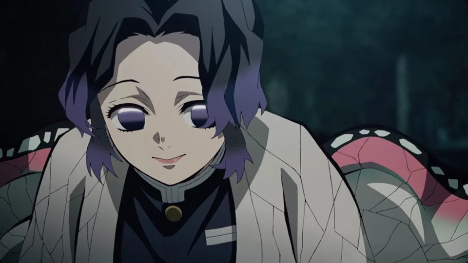
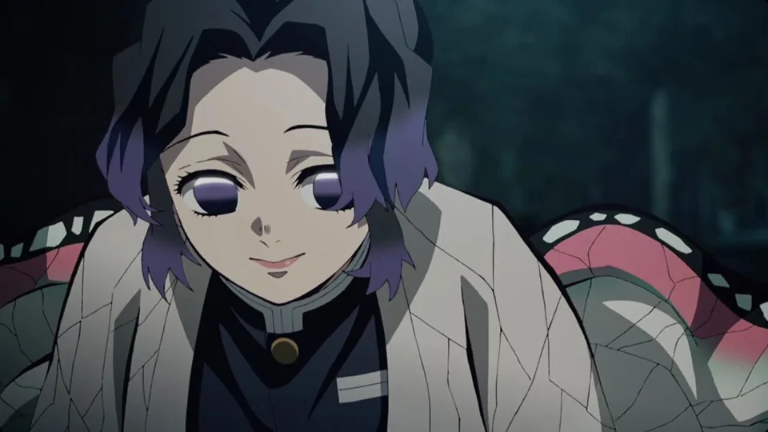

Muichiro Tokito é um dos Hashiras (Pilares) em Demon Slayer: Kimetsu no Yaiba. Ele é o Hashira da Névoa, conhecido por sua habilidade excepcional na Respiração da Névoa. Apesar de sua personalidade distante, ele é um lutador extremamente dedicado e talentoso. Sua história envolve a perda de sua família para demônios, o que o motivou a se tornar um Caçador de Demônios.
Gyomei Himejima é o Hashira da Pedra em Demon Slayer: Kimetsu no Yaiba. Ele é um dos Caçadores de Demônios mais poderosos, conhecido por sua força imensa e habilidade com a Respiração da Pedra. Gyomei é um personagem gentil e dedicado, com um forte senso de justiça e proteção. Apesar de sua aparência intimidadora, ele é profundamente espiritual e altruísta.
Shinobu Kocho é a Hashira dos Insetos em Demon Slayer: Kimetsu no Yaiba. Ela é uma especialista em venenos e utiliza a Respiração dos Insetos para combater demônios. Conhecida por sua personalidade amável e sorridente, Shinobu esconde uma dor profunda devido à perda de sua família para demônios. Ela é muito inteligente e usa seu conhecimento para criar venenos poderosos que ajudam a derrotar inimigos.